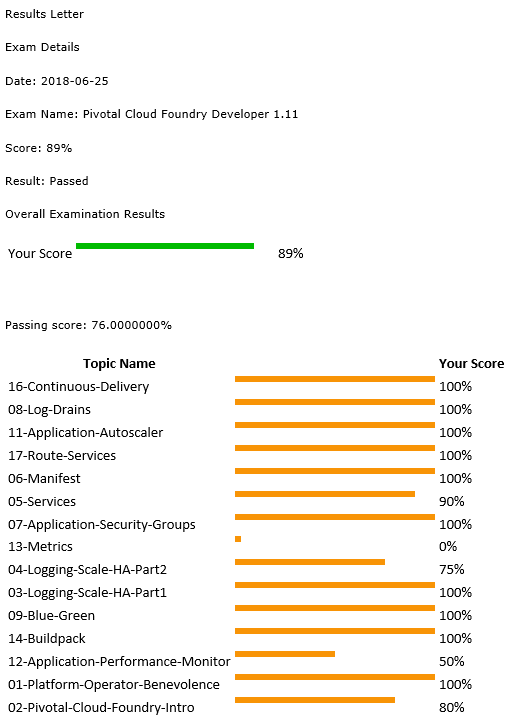

2018-06-28
Pivotal Cloud Foundry Certified Developer
With all the knowledge built up for my CFCD exam I did earlier I took another Cloud Foundry exam. The Pivotal flavor this time.
Not as involved as the other Cloud Foundry exam I did but still a wide variety of questions. I'm not sure if I screwed up all the Metrics questions, or that there was only 1 that I got incorrect.

Still really happy with the result.